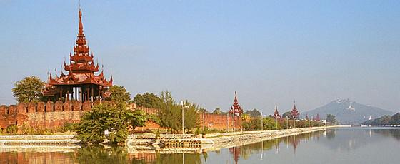
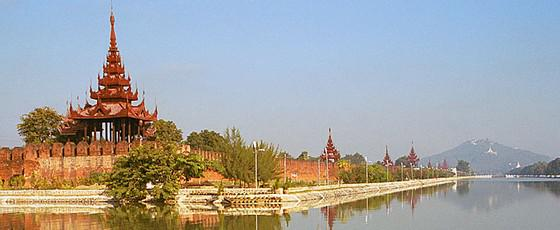

Mandalay
.jpg)
Mandalay
is the second-largest city and the last royal capital of Myanmar (Burma). Located 716 km (445 mi) north of Yangon on the east bank of the Irrawaddy River, the city has a population of 1,225,553 (2014 census).
Mandalay is the economic centre of Upper Burma and considered the centre of Burmese culture. A continuing influx of Chinese immigrants, mostly from Yunnan, in the past twenty years, has reshaped the city's ethnic makeup and increased commerce with China. Despite Naypyidaw's recent rise, Mandalay remains Upper Burma's main commercial, educational and health center. The city gets its name from the nearby Mandalay Hill. The name is probably a derivative of a Pali word, although the exact word of origin remains unclear. The root word has been speculated to be mandala, referring to circular plains or Mandara, a mountain from Hindu mythology.
When it was founded in 1857, the royal city was officially named Yadanabon
a loan of the Pali name Ratanapura
"City of Gems."
It was also called Lay Kyun Aung Myei
"Victorious Land over
the Four Islands") and Mandalay Palace
"Famed Royal Emerald Palace").
.jpg)
.jpg)
Like most former (and present) capitals of Burma, Mandalay was founded on the wishes of the ruler of the day. On 13 February 1857, King Mindon founded a new royal capital at the foot of Mandalay Hill, ostensibly to fulfill a prophecy on the founding of a metropolis of Buddhism in that exact place on the occasion of the 2,400th jubilee of Buddhism.
The new capital city site was 66 km2(25.5 sq mi) in area, surrounded by four rivers. The plan called for a 144-square block grid patterned citadel, anchored by a 16 square block royal palace compound at the center by Mandalay Hill. The 1020-acre (413-hectare) citadel was surrounded by four 2,032 m (6,666 ft) long walls and a moat 64 m (210 ft) wide, 4.6 m (15 ft) deep. At intervals of 169 m (555 ft) along the wall, were turrets with gold-tipped spires for watchmen. The walls had three gates on each side, and five bridges to cross the moat. In addition, the king also commissioned the Kuthodaw Pagoda, the Pahtan-haw ShweThein upasampada hall, the Thudamma "Good Dharma" zayats or public houses for preaching Buddhism and a library for the Pali Canon.
In June 1857, the former royal palace of Amarapura was dismantled and moved by elephants to the new location at the foot of Mandalay Hill, although construction of the palace compound was officially completed only two years later, on Monday, 23 May 1859.
For the next 26 years, Mandalay was to be the last royal capital of the Konbaung Dynasty, the last independent Burmese kingdom before its final annexation by the British Empire. Mandalay ceased to be the capital on 28 November 1885 when the conquering British sent Thibaw Min and his queen Supayalat into exile, ending the Third Anglo-Burmese War.
.jpg) 

.jpg) During World War II, Mandalay suffered the most devastating air raids of the war. On April 3, 1942, during the Japanese conquest of Burma, the Imperial Japanese Army Air Service carried out an extensive assault on the city. As the city was defenseless and its firefighting were weak that had been lost in the earlier bombing and that they met no opposition from the British RAF as all its aircraft had by now been withdrawn to India, three-fifths of the houses were destroyed and 2,000 civilians were killed. Many again fled the city when the city was under Japanese occupation from May 1942 to March 1945. The palace citadel, turned into a supply depot by the Japanese, was burnt to the ground by Allied bombing; only the royal mint and the watch tower survived. (A faithful replica of the palace was rebuilt in the 1990s.)
After the country gained independence from Britain in 1948, Mandalay continued to be the main cultural, educational and economic hub of Upper Burma. Until the early 1990s, most students from Upper Burma went to Mandalay for university education. Until 1991, Mandalay University, the University of Medicine, Mandalay and the Defence Services Academywere the only three universities in Upper Burma. Only a few other cities had "Degree Colleges" affiliated with Mandalay University that offered a limited number of subjects. Today, the city attracts a fraction of students as the military government requires students to attend their local universities in order to reduce concentration of students in one place.
In November 1959, Mandalay celebrated its centennial with a festival at the foot of Mandalay Hill. Special commemorative stamps were issued. During Ne Win's isolationist rule (1962–1988), the city's infrastructure deteriorated. By the early 1980s, the second largest city of Burma resembled a town with low-rise buildings and dusty streets filled mostly with bicycles.
During World War II, Mandalay suffered the most devastating air raids of the war. On April 3, 1942, during the Japanese conquest of Burma, the Imperial Japanese Army Air Service carried out an extensive assault on the city. As the city was defenseless and its firefighting were weak that had been lost in the earlier bombing and that they met no opposition from the British RAF as all its aircraft had by now been withdrawn to India, three-fifths of the houses were destroyed and 2,000 civilians were killed. Many again fled the city when the city was under Japanese occupation from May 1942 to March 1945. The palace citadel, turned into a supply depot by the Japanese, was burnt to the ground by Allied bombing; only the royal mint and the watch tower survived. (A faithful replica of the palace was rebuilt in the 1990s.)
After the country gained independence from Britain in 1948, Mandalay continued to be the main cultural, educational and economic hub of Upper Burma. Until the early 1990s, most students from Upper Burma went to Mandalay for university education. Until 1991, Mandalay University, the University of Medicine, Mandalay and the Defence Services Academywere the only three universities in Upper Burma. Only a few other cities had "Degree Colleges" affiliated with Mandalay University that offered a limited number of subjects. Today, the city attracts a fraction of students as the military government requires students to attend their local universities in order to reduce concentration of students in one place.
In November 1959, Mandalay celebrated its centennial with a festival at the foot of Mandalay Hill. Special commemorative stamps were issued. During Ne Win's isolationist rule (1962–1988), the city's infrastructure deteriorated. By the early 1980s, the second largest city of Burma resembled a town with low-rise buildings and dusty streets filled mostly with bicycles.
.JPG)
.jpg)
In the
1980s, the city was hit by two major fires. In May 1981, a fire razed more than 6,000 houses and public buildings, leaving more than 36,000 homeless. On 24 March 1984, another fire destroyed 2,700 buildings and made 23,000 people homeless.
Fires continue to plague the city. A major fire destroyed Mandalay's second largest market, Yadanabon Market, in February 2008, and another major fire in February 2009 destroyed 320 homes and left over 1600 people homeless.
The 1980s fires augured a significant change in the city's physical character and ethnic makeup. Huge swaths of land left vacant by the fires were later purchased, mostly by the ethnic Han-Chinese, many of whom were recent immigrants from Yunnan. The Chinese influx accelerated after the current State Peace and Development Council came to power in 1988. With the Burmese government turning a blind eye, many Chinese immigrants from Yunnan (and also from Sichuan) poured into Upper Burma in the 1990s and many openly ended up in Mandalay. In the 1990s alone, about 250,000 to 300,000 Yunnanese are estimated to have migrated to Mandalay.
.jpg)
Today, ethnic Chinese people are believed to make up about 40%–50% of the city's population that is nearly the same as the natives, and are a major factor in the city's doubling of population from about 500,000 in 1980 to one million in 2008. Chinese festivals are now firmly embedded in the city's cultural calendar. There is a complaint that Mandalay is becoming little more than a satellite of China and that the British colonial romance of old Mandalay is long gone.
In the 1990s alone, about 250,000 to 300,000 Yunnanese are estimated to have migrated to Mandalay. Today, ethnic Chinese people are believed to make up about 40%–50% of the city's population that is nearly the same as the natives, and are a major factor in the city's doubling of population from about 500,000 in 1980 to one million in 2008. Chinese festivals are now firmly embedded in the city's cultural calendar. There is a complaint that Mandalay is becoming little more than a satellite of China and that the British colonial romance of old Mandalay is long gone.
The Chinese are largely responsible for the economic revitalization of the city centre, now rebuilt with apartment blocks, hotels and shopping centres, and returning the city to its role as the trading hub connecting Lower Burma, Upper Burma, China and India. The Chinese dominance in the city center has pushed out the rest to the suburbs. The urban sprawl now encompasses Amarapura, the very city King Mindon left some 150 years ago. Mandalay celebrated its 150th birthday on 15 May 2009, at precisely 4:31:36 am.[6]
Despite the rise of Naypyidaw, the country's capital since 2006, Mandalay remains Upper Burma's main commercial, educational and health center.
 Facebook:
Facebook:  Email:
Email:  Browser:
Browser:  Phone:
Phone:  Address:
Address: